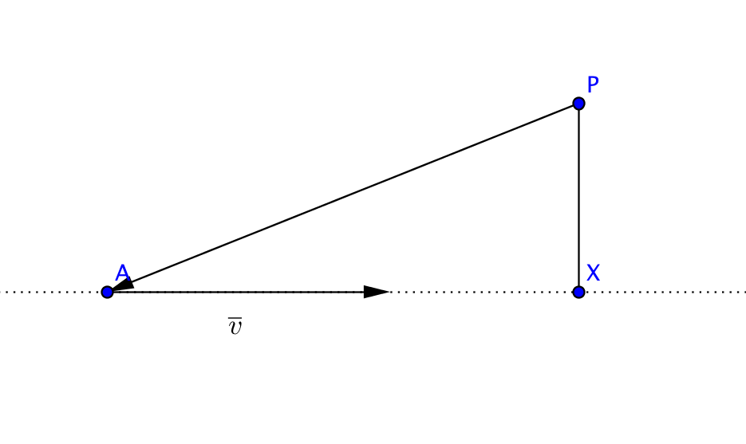
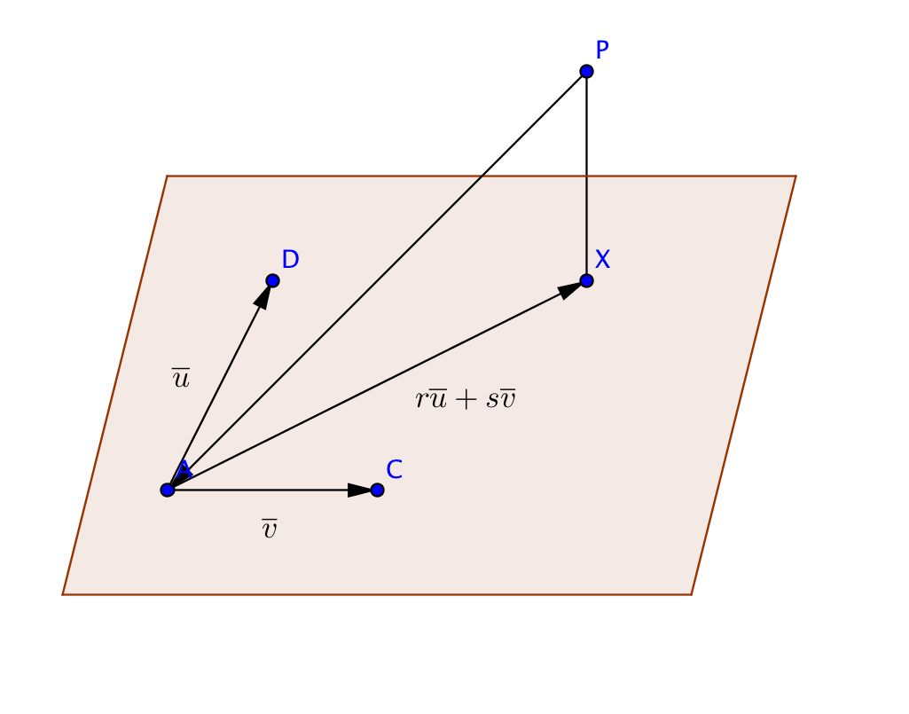
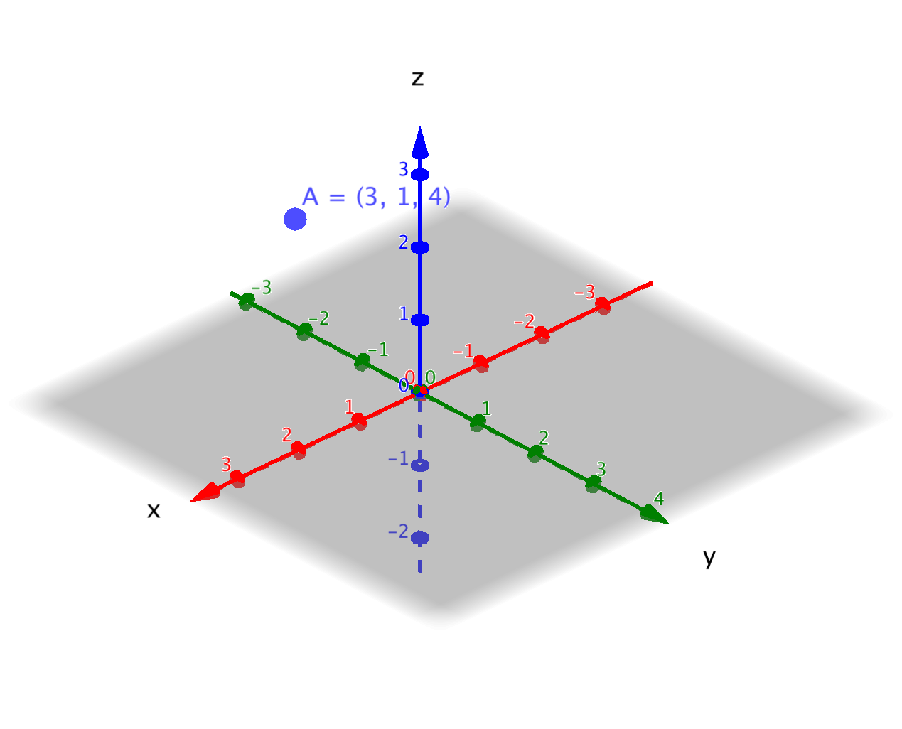
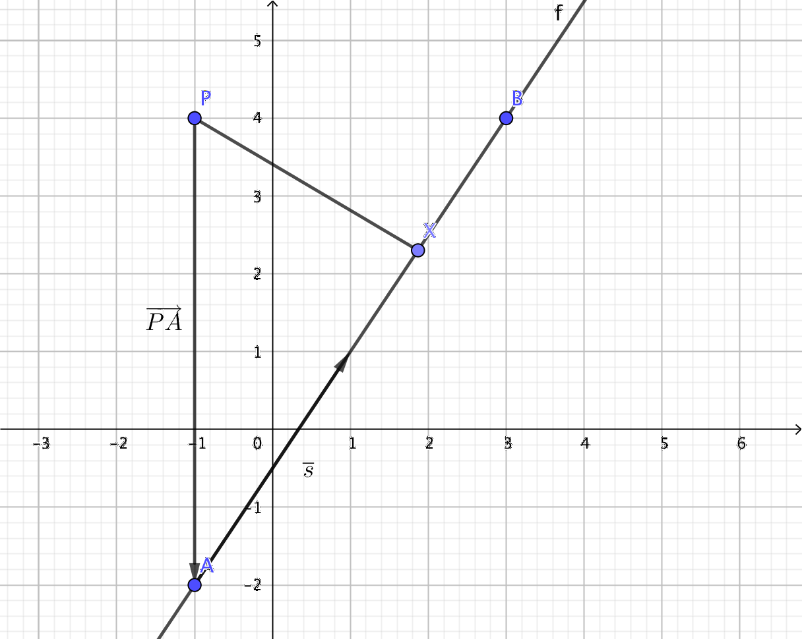

12. Avstånd mellan en punkt och en linje i rymden
Som det sista i kursen tar vi och ser på avstånd mellan punkter och linjer och punkter och plan. Här är egentligen ingenting nytt utan vi tillämpar det som vi lärt oss från förut.
Exempel 1 En linje bestäms av punkten \(A =(2,1,3)\) och vektorn \(3\overline{i}-\overline{j}+\overline{k}\). Vilken punkt på linjen är närmast punkten \(P=(8,1,7)\)? Vilket är det kortaste avståndet mellan \(P\) och linjen?
Lösning
Närmast punkten \(P\) på linjen är den punkt därifrån vi kan rita en normal från linjen som går genom \(P\). Vi kallar denna punkt \(X\).

Vi uttrycker att \(\overrightarrow{PX} = \overrightarrow{PA}+\overrightarrow{AX} = \overrightarrow{PA} + t\overline{v}\).
Eftersom \(\overrightarrow{PX}\) och \(\overline{v}\) skall var vinkelräta mot varandra skall skalära produkten av dessa ha värdet noll.
Vi tar och bildar de nödvändiga vektorerna.
\(\begin{array}{rl} \overrightarrow{PA}= & (2-8)\overline{i}+(1-1)\overline{j}+(3-7)\overline{k} \\ = & -6\overline{i}-4\overline{k}\\ \end{array}\)
och
\(\begin{array}{rl} \overrightarrow{PX}= & \overrightarrow{PA}+t\overline{v} \\ = & -6\overline{i}-4\overline{k} + t(3\overline{i}-\overline{j}+\overline{k}) \\ = & (-6+3t)\overline{i}-t\overline{j}+(-4+t)\overline{k}\\ \end{array}\)
Sedan bestämmer vi \(\overrightarrow{PX}\cdot \overline{v}=0\):
\(\begin{array}{rcl} \overrightarrow{PX}\cdot \overline{v} & = & 0 \\ ((-6+3t)\overline{i}-t\overline{j}+(-4+t)\overline{k}) \cdot (3\overline{i}-\overline{j}+\overline{k}) & = & 0 \\ (-6+3t)\cdot 3 -t(-1) + (-4+t)\cdot 1 & = & 0 \\ -18 +9t +t+-4+t & = & 0 \\ 11t & = & 22 \\ t & = & \dfrac{22}{11}=2 \end{array}\)
Vi har alltså att \(\overrightarrow{AX} = 2\overline{v}\).
Då kan vi bestämma koordinaterna för \(X\).
\(\begin{array}{rl} \overrightarrow{OX}= & \overrightarrow{OA}+\overrightarrow{AX} \\ = & \overrightarrow{OA} + 2 \overline{v} \\ = & 2 \overline{i}+\overline{j}+3\overline{k} + 2(3 \overline{i}-\overline{j}+\overline{k} \\ = & 8 \overline{i}-\overline{j}+5\overline{k}\\ \end{array}\)
\(X\) har koordinaten \((8,-1,5)\).
Avståndet mellan P och linjen är det kortaste, alltså avståndet mellan P och X. Avståndet \(\mid PX\mid = \sqrt{(8-8)^2+(1-(-1))^2+(7-5)^2}=\sqrt{8} = 2\sqrt{2}\).
Exempel 2 Ett plan spänns upp av punkten \(A = (1,3,0)\) och basvektorerna \(\overline{u}=\overline{i}+\overline{k}\) och \(\overline{v}=\overline{i}-\overline{j}+\overline{k}\). Vilken punkt i planet är närmast punkten \(P=(-2,-4,1)\). Bestäm avståndet mellan planet och punkten P.
Lösning
Vi börjar med att rita en bild.

Det som vi vill ha är \(\mid \overrightarrow{PX} \mid\).
\(\overrightarrow{PX}\) kan vi uttrycka som \(\overrightarrow{PA} + \overrightarrow{AX}\). Eftersom \(\overrightarrow{AX}\) är i planet som spänns upp av \(\overline{u}\) och \(\overline{v}\) så kan vi uttrycka \(\overrightarrow{AX} = r\overline{u} + s\overline{v}\).
Vi får att \(\overrightarrow{PX}=\overrightarrow{PA}+ r\overline{u} + s\overline{v}\).
Vidare gäller det att \(\overrightarrow{PX}\) är vinkelrät mot bägge basvektorerna, \(\overline{u}\) och \(\overline{v}\).
\(\overrightarrow{PA}=(1-(-2))\overline{i}+(3-(-4))\overline{j}+(0-1)\overline{k} = 3\overline{i} +7\overline{j}-\overline{k}\).
Då är vi färdiga att börja räkna.
\(\begin{array}{rl} \overrightarrow{PX}= & \overrightarrow{PA}+ r\overline{u} + s\overline{v} \\ = & 3\overline{i} +7\overline{j}-\overline{k} + r(\overline{i}+\overline{k})+s(\overline{i}-\overline{j}+\overline{k}) \\ = & (3+r+s)\overline{i}+(7-s)\overline{j}+(-1+r+s)\overline{k} \\ \end{array}\)
Att \(\overrightarrow{PX}\) är vinkelrät mot \(\overline{u}\) betyder att \(\overrightarrow{PX}\cdot \overline{u}=0\) och att \(\overrightarrow{PX}\) är vinkelrät mot \(\overline{v}\) betyder att \(\overrightarrow{PX}\cdot \overline{v}=0\).
Vi bildar dessa uttryck.
\(\begin{array}{rcl} \overrightarrow{PX} \cdot \overline{u} & = & 0 \\ (3+r+s)\cdot 1 +(7-s)\cdot 0 + (-1+r+s)\cdot 1 & = & 0 \\ 3 +r+s-1+r+s & = & 0 \\ 2r+2s & = & -2 \\ \end{array}\)
och
\(\begin{array}{rcl} \overrightarrow{PX} \cdot \overline{v} & = & 0 \\ (3+r+s)\cdot 1 +(7-s)(-1) + (-1+r+s)\cdot 1 & = & 0 \\ 3 +r+s-7+s-1+r+s & = & 0 \\ 2r+3s & = & 5 \\ \end{array}\)
Vi får ett ekvationssystem
\(\left\{ \begin{array}{rcl} 2r + 2s & = & -2 \\ 2r+3s & = & 5 \\ \end{array} \right.\)
Ekvationssystemet har lösningarna \(s=7\) och \(r=-8\).
Vi får \(\overrightarrow{PX}\) som \((3-8+7)\overline{i}+(7-7)\overline{j}+(-1-8+7)\overline{k}=2\overline{i}-2\overline{k}\).
Längden är \(\mid \overrightarrow{PX} \mid = \sqrt{2^2+(-2)^2}=\sqrt{8}=2\sqrt{2}\).
Uppgifter
Bestäm avståndet för punkten \(P = (3,1,4)\) från
- \(x\)-axeln.
Situationen är följande

Avståndet får vi via Pythagoras \( d = \sqrt{1^2 + 4^2} = \sqrt{17} \approx 4,1 \) l.e.
- \(y\)-axeln
På motsvarande sätt som i a).
Avståndet är \( \sqrt{3^2+4^2} = \sqrt{25} = 5 \) l.e.
- \(xy\)-planet
Avståndet är samma som \( z \)-koordinaten. Alltså 4 l.e.
- \(xz\)-planet.
Avståndet är samma som \( y \)-koordinaten. Alltså 1 l.e.
- \(x\)-axeln.
- Linjen \( l_1 \) går genom punkten \( A=(4,1,-2) \) och har riktningsvektorn \( \overline{s} = 3\overline{i} -6\overline{j} + 2\overline{k} \).
- Vilken punkt på linjen är närmast punkten \( P=(2,1,-48) \)?
Den punkt på linjen som är närmast punkten \( P \) på linjen betecknar vi med \( X \). Linjen genom \( P \) och \( X \) är vinkelrät med linjen \( l_1 \).
Situtationen är följande

Vi uttrycker \( \overrightarrow{AX} = t\overline{s} \).
Vi får \( \overrightarrow{PX} = \overrightarrow{PA} + t\overline{s} \)
Vi bildar ett uttryck för \( \overrightarrow{PX} \) och löser ut \( t \) ur ekvationen \( \overline{s} \cdot \overrightarrow{PX} = 0 \).
\( \overrightarrow{PA} = (4-2)\overline{i} + (1-1)\overline{j} + (-2-(-48))\overline{k} = 2\overline{i} +46\overline{k} \)
\( \overrightarrow{PX} = \overrightarrow{PA} + t\overline{s} = 2\overline{i} +46\overline{k} + t(3\overline{i} -6\overline{j} + 2\overline{k}) = (2+3t)\overline{i} -6t\overline{j} + (46+2t)\overline{k}\)
Sedan utnyttjar vi skalära produkten.
\( \overline{s} \cdot \overrightarrow{PX} = 0 \)
Alltså \( 3(2+3t) -6(-6t) +2(46+2t) = 0 \). Vi får att \( t = -2 \).
Då vet vi att \( \overrightarrow{AX} = -2\overline{s} \).
Alltså \( \overrightarrow{OX} = \overrightarrow{OA} + \overrightarrow{AX} = \overrightarrow{OA} -2\overline{s} \). Vi får \( \overrightarrow{OX} = -2\overline{i} + 13\overline{j} -6\overline{k} \).
\( X \):s koordinater är \( (-2,13,-6) \).
- Bestäm avståndet för punkten \( P \) till linjen.
Vi bestämmer avståndet mellan punkterna \( P=(2,1,-48) \) och \( X =(-2,13,-6) \).
\( d = \sqrt{(-2-2)^2 +(13-1)^2 + (-6-(-48))^2} = \sqrt{1924} \approx 43,9 \) l.e.
- Vilken punkt på linjen är närmast punkten \( P=(2,1,-48) \)?
- En linje går genom punkten \( A=(1,0,3) \) och \( B= (2,-1,4)\).
- Vilken punkt på linjen är närmast punkten \(P = (6,-4,6)\)?
Vi betecknar punkten med \( X \).
Situtationen är följande
Vi skall bilda \( \overrightarrow{PX} = \overrightarrow{PA} + t\overline{s} \).
Dessutom skall \( \overrightarrow{PX} \cdot \overline{s} = 0\).
\( \overrightarrow{PA} = (1-6)\overline{i} + (0-(-4))\overline{j} + (3-6)\overline{k} = -5\overline{i} +4\overline{j} -3\overline{k} \)
Vektorn genom \( A \) och \( B \).
\( \overrightarrow{AB} = \overline{s} = (2-1)\overline{i} + (-1-0)\overline{j} + (4-3)\overline{k} = \overline{i} -\overline{j} +\overline{k} \)
\( \overrightarrow{PX} = \overrightarrow{PA} +t\overline{s} = (-5+t)\overline{i} +(4-t)\overline{j} +(-3+t)\overline{k}\).
Vi undersöker den skalära produkten
\( \overrightarrow{PX} \cdot \overline{s} = 0\) alltså \( (-5+t)\cdot 1+(4-t)(-1)+(-3+t)\cdot 1 = 0 \).
Alltså då \( t = 4 \).
Då vet vi att \( \overrightarrow{AX} = 4 \overline{s} \). Vi får \( X \):s koordinater.
\( \overrightarrow{OX} = \overrightarrow{OA} +4 \overline{v} \).
Alltså \( \overrightarrow{OX} = 5 \overline{i} -4\overline{j} +7 \overline{k} \).
\( X \):s koordinater är \( (5,-4,7) \)
- Bestäm avståndet mellan P och linjen.
Vi bestämmer avståndet mellan punkterna \( P \) och \( X \).
\( d =\sqrt{(6-5)^2 + (-4-(-4))^2 + (6-7)^2} = \sqrt{2} \approx 1,4 \) l.e.
- Vilken punkt på linjen är närmast punkten \(P = (6,-4,6)\)?
- Bestäm avståndet, med hjälp av vektorer, från punkten \(P (-1,4)\) till linjen som går genom punkterna \((-1,-2)\) och \((3,4)\).
Situationen är följande

Vi bestämmer koordinaterna för \( X \).
Vi vet att \( \overrightarrow{PX} \cdot \overline{s} = 0 \).
\( \overrightarrow{PX} = \overrightarrow{PA} + t\overline{s} \).
Vi bildar vektorerna.
\( \overrightarrow{PA} = (-1-(-1))\overline{i} + (-2-4)\overline{j} = -6\overline{j} \)
\( \overline{s} = \overrightarrow{AB} = (3-(-1))\overline{i} + (4-(-2))\overline{j} = 4 \overline{i} + 6\overline{j} \)
Vi får att \( \overrightarrow{PX} = 4t \overline{i} + (-6+6t)\overline{j} \)
Vi utnyttjar att den skalära produkten \( \overrightarrow{PX} \cdot \overline{s} = 0 \) och får \( t = \dfrac{9}{13} \).
Vektorn \( \overrightarrow{PX} = \dfrac{36}{13} \overline{i} -\dfrac{24}{13}\overline{j} \).
Längden \( \mid \overrightarrow{PX} \mid = \sqrt{(\dfrac{36}{13})^2 + (-\dfrac{24}{13})^2} = \dfrac{12}{\sqrt{13}} \approx 3,3 \) l.e.
- Bestäm avståndet från punkten \(P=(10,1,-2)\) till linjen som går genom punkterna \( A=(3,2,1) \) och \( B= (2,2,2) \).
Vi betecknar punkten med \( X \).
Situtationen är följande
Vi skall bilda \( \overrightarrow{PX} = \overrightarrow{PA} + t\overline{s} \).
Dessutom skall \( \overrightarrow{PX} \cdot \overline{s} = 0\).
\( \overrightarrow{PA} = (3-10)\overline{i} + (2-1)\overline{j} + (1-(-2))\overline{k} = -7\overline{i} +\overline{j} +3\overline{k} \)
Vektorn genom \( A \) och \( B \).
\( \overrightarrow{AB} = \overline{s} = (2-3)\overline{i} + (2-2)\overline{j} + (2-1)\overline{k} = -\overline{i} +\overline{k} \)
\( \overrightarrow{PX} = \overrightarrow{PA} +t\overline{s} = (-7-t)\overline{i} +\overline{j} +(3+t)\overline{k}\).
Vi undersöker den skalära produkten
\( \overrightarrow{PX} \cdot \overline{s} = 0\) alltså \( (-7-t)(-1)+1\cdot 0 +(3+t)\cdot 1 = 0 \).
Alltså då \( t = -5 \).
Vi får då att \( \overrightarrow{PX} = -2\overline{i} + \overline{j} -2\overline{k} \).
\( \mid \overrightarrow{PX} \mid = \sqrt{(-2)^2+1^2+(-2)^2} = 3 \) l.e.
Eller så kan du bestämma koordianterna för \( X \) som är \((8,2,-4) \) och bestämma avsåndet mellan \( P \) och \( X \).
- Bestäm avståndet mellan punkten \((10,1,-2)\) och planet som spänns upp av punkterna \((1,1,2)\), \((3,0,3)\) och \((2,2,5)\).
Vi börjar med att rita en bild.

Det som vi vill ha är \(\mid \overrightarrow{PX} \mid\).
Vi har \(\overrightarrow{PX} = \overrightarrow{PA} + \overrightarrow{AX}\). Eftersom \(\overrightarrow{AX}\) är i planet som spänns upp av \(\overline{u}\) och \(\overline{v}\) så kan vi uttrycka \(\overrightarrow{AX} = r\overline{u} + s\overline{v}\).
\( \overline{u} \) och \( \overline{v} \) bildar vi med hjälp av \( A= (1,1,2) \), \( B=(3,0,3) \) och \( C= (2,2,5) \) så att \( \overline{u} = \overrightarrow{AB} = (3-1)\overline{i} + (0-1)\overline{i} + (3-2)\overline{i} = 2\overline{i} -\overline{i} + \overline{i} \) och \( \overline{v} = \overrightarrow{AC} = (2-1)\overline{i} + (2-1)\overline{i} + (5-2)\overline{i} = \overline{i} +\overline{i} + 3\overline{i} \)
Vi får att \(\overrightarrow{PX}=\overrightarrow{PA}+ r\overline{u} + s\overline{v}\).
Vidare gäller det att \(\overrightarrow{PX}\) är vinkelrät mot bägge basvektorerna, \(\overline{u}\) och \(\overline{v}\).
Vi bildar de vektorer som vi behöver.
\(\overrightarrow{PA}=(1-10)\overline{i}+(1-1)\overline{j}+(1-(-2))\overline{k} = -9\overline{i} +3 \overline{k}\).
Då är vi färdiga att börja räkna.
\(\begin{array}{rl} \overrightarrow{PX}= & \overrightarrow{PA}+ r\overline{u} + s\overline{v} \\ = & (-9+2r+s)\overline{i}+(-r+s)\overline{j}+(3+r+3s)\overline{k} \\ \end{array}\)
Att \(\overrightarrow{PX}\) är vinkelrät mot \(\overline{u}\) betyder att \(\overrightarrow{PX}\cdot \overline{u}=0\) och att \(\overrightarrow{PX}\) är vinkelrät mot \(\overline{v}\) betyder att \(\overrightarrow{PX}\cdot \overline{v}=0\).
Vi bildar dessa uttryck.
\(\begin{array}{rcl} \overrightarrow{PX} \cdot \overline{u} & = & 0 \\ (-9+2r+s)\cdot 2 +(-r+s)(-1) + (3+r+3s)\cdot 1 & = & 0 \\ 6r+4s & = & 15 \\ \end{array}\)
och
\(\begin{array}{rcl} \overrightarrow{PX} \cdot \overline{v} & = & 0 \\ (-9+2r+s)\cdot 1 +(-r+s)\cdot 1 + (3+r+3s)\cdot 3 & = & 0 \\ 4r+11s & = & 0 \\ \end{array}\)
Vi får ett ekvationssystem vars lösningar är \( r = \dfrac{33}{10 }\) och \( s = -\dfrac{6}{5} \).
Vi får \(\overrightarrow{PX}\) som \( -\dfrac{18}{5}\overline{i}-\dfrac{9}{2} \overline{j} +\dfrac{27}{10}\overline{k}\).
Längden är \(\mid \overrightarrow{PX} \mid = \sqrt{(-\dfrac{18}{5})^2+(-\dfrac{9}{2})^2 + (\dfrac{27}{10})^2} \approx 6,4 \) l.e.
- Ett flygplan startar från \((1,5,0)\) och flyger i riktningen \(2\overline{i}-\overline{j}+2\overline{k}\). Ekvationen \(x-2y-4=0\) beskriver en strandlinje. Hur högt ovanför strandlinjen kommer flygplanet att flyga då en ruta motsvarar 100 m?
Ekvationen för linjen som beskriver flygplanets rutt är
\( \left\{ \begin{array}{l} x = 1 + 2t \\ y = 5 -t \\ z = 0 + 2t , t \in \mathbf{ R}\\ \end{array} \right. \)
Vi ser på situationen uppifrån. Då får vi ekvationssystemet
\( \left\{ \begin{array}{l} x = 1 + 2t \\ y = 5 -t \\ x - 2y -4 = 0 \\ \end{array} \right. \)
Då vi löser ekvationssystemet får vi lösningarna \( t = \dfrac{13}{4} \), \( z = \dfrac{15}{2} \) och \( y = \dfrac{7}{4} \).
Vi sätter in värdet på \( t \) i linjens ekvation och får värdet 6,5. Eftersom 1 ruta omtsvaras av 100 m är höjden 650 m.